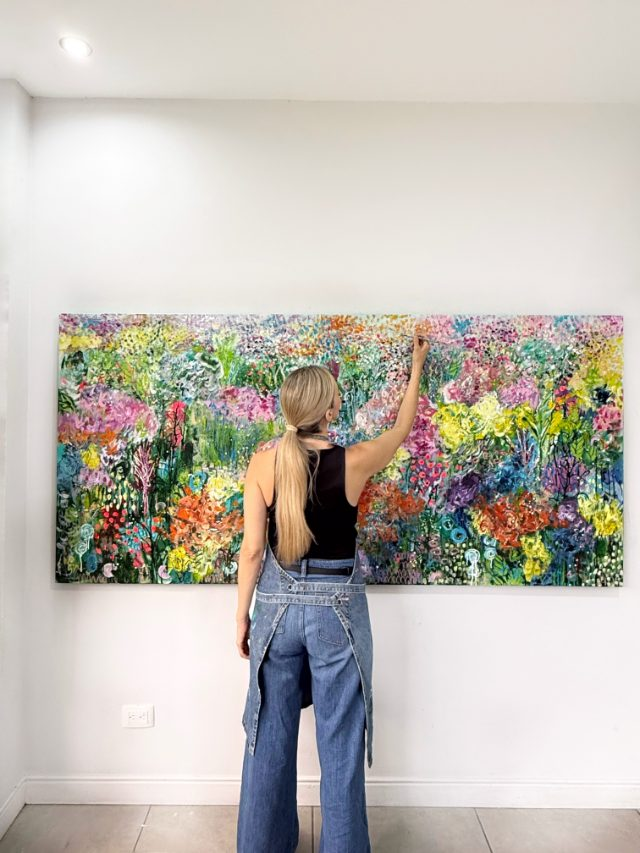
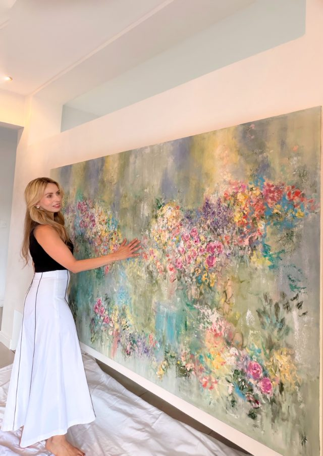
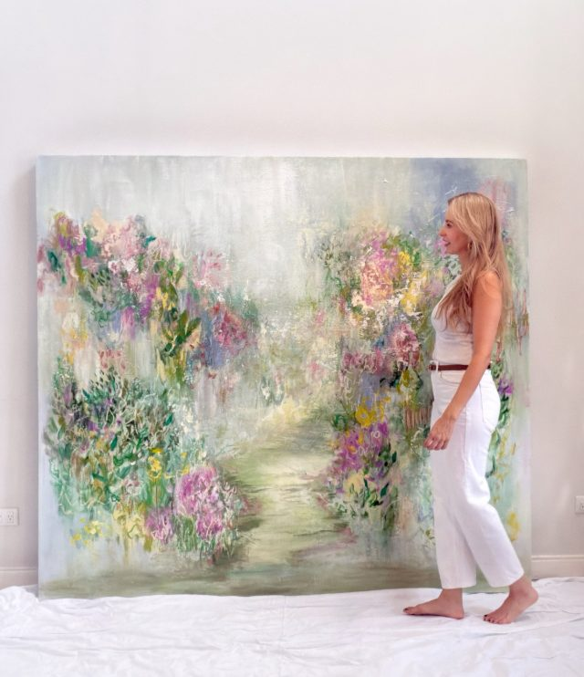
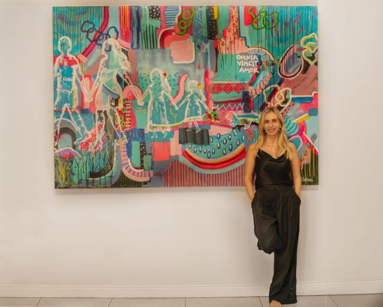
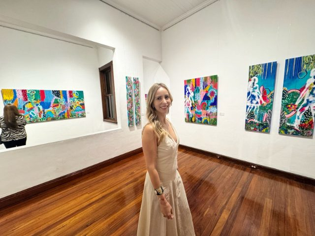
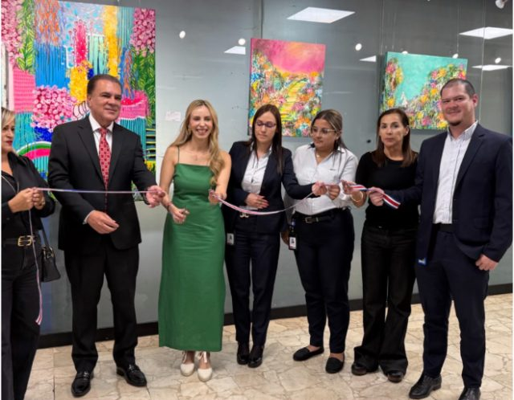
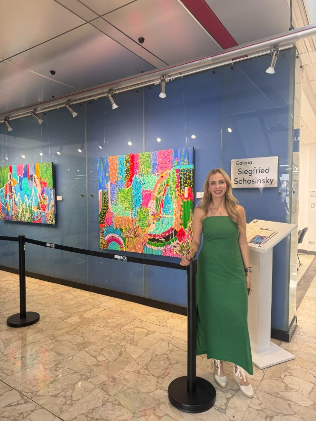

Rocio Villamizar Bohórquez
La artista

Soy Rocio Villamizar Bohórquez, artista colombiana y costarricense. Pinto emociones y sentimientos sobre lienzo.
Me formé en Inglaterra, Brasil, Colombia y Costa Rica. Esas escuelas y esas ciudades me dieron un modo propio de pintar. La obra nace de lo que vi: otras culturas, otras luces, y la vida que cargo conmigo.
Llevo más de dieciocho años en esto. La naturaleza, las personas y lo que sentimos al pasar son el material. Las figuras son ese sentimiento, puesto en color.
Las figuras que plasmo en mis lienzos son el reflejo de esos sentimientos y experiencias.
Rocio Villamizar
El estudio
Antes del color.
El lienzo empieza en blanco. Después llega el color.


En el estudio





Exposiciones
- 2026 Próxima · 3 de diciembreFragmentos de un jardínGalería Nacional, Museo de los Niños · San José, Costa Rica
-
2026
OrigenGalería Siegfried Schosinsky, Banco de Costa Rica · San José · del 4 de marzo al 16 de abrilDiez acrílicos sobre la mujer como principio y fuerza creadora.


- 2023 AhoraAeropuerto Juan Santamaría, sala VIPCosta Rica
- 2022 AhoraFN ART GalleryCosta Rica
- 2022Galería Vida del ArteCosta Rica
- 2021The Golden Ratio, Palazzo RuspoliRoma
- 2018Parque LageRío de Janeiro
- 2017ScenariumRío de Janeiro
- 2016EmbrujarteCosta Rica
- 2015Art Walk, Avenida EscazúCosta Rica
- 2014EmbrujarteCosta Rica
- 2013Fundación BrasilCosta Rica
Entrevista
Te comparto esta entrevista. Es una experiencia que me llena de felicidad: aquí pude mostrar un poco más de mis obras y de mí, como artista y como mujer colombiana y costarricense.
Si quieres una obra, o ver el estudio, escríbeme.
WhatsApp